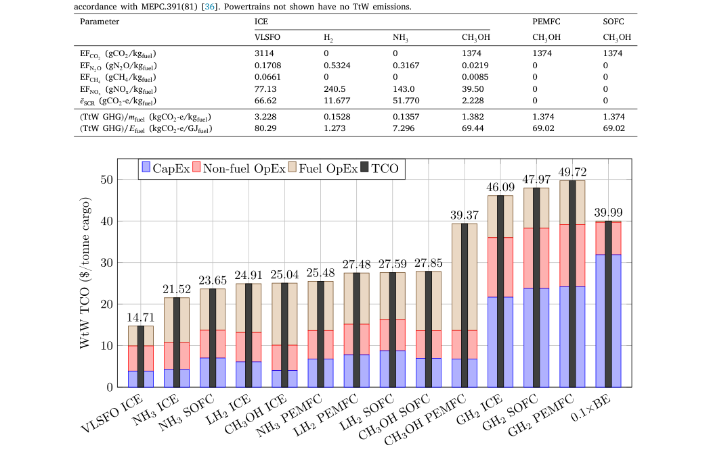
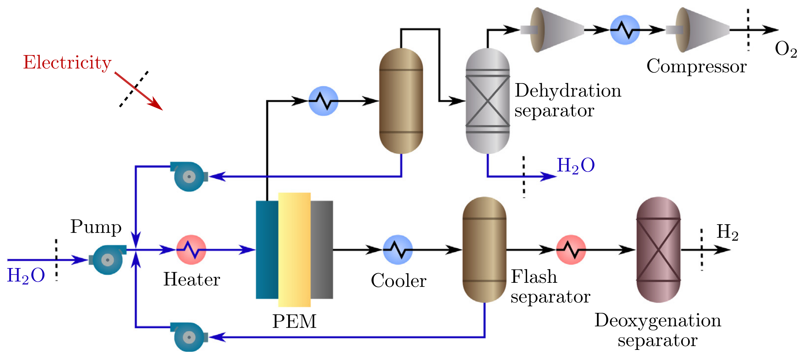
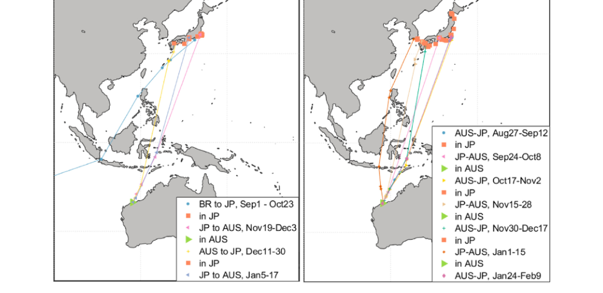
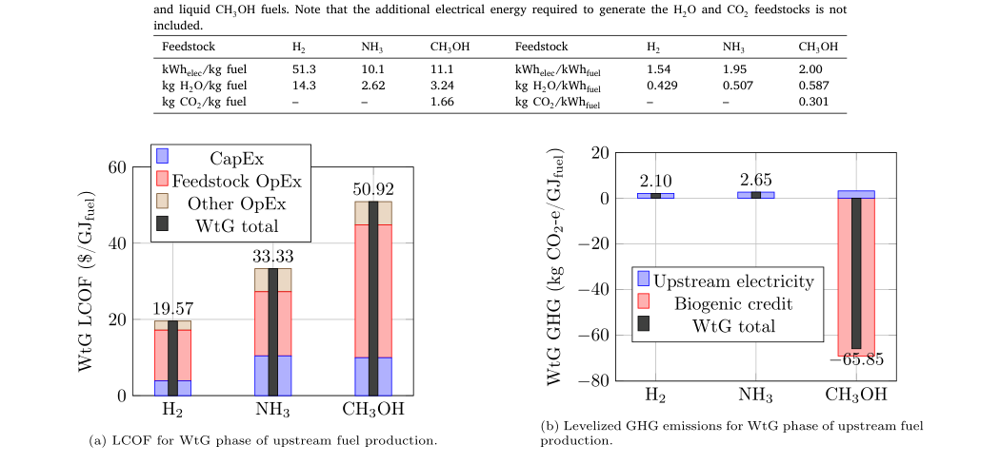
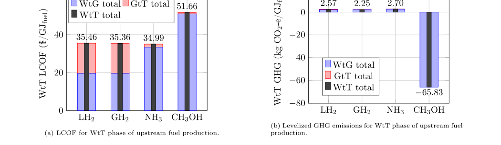
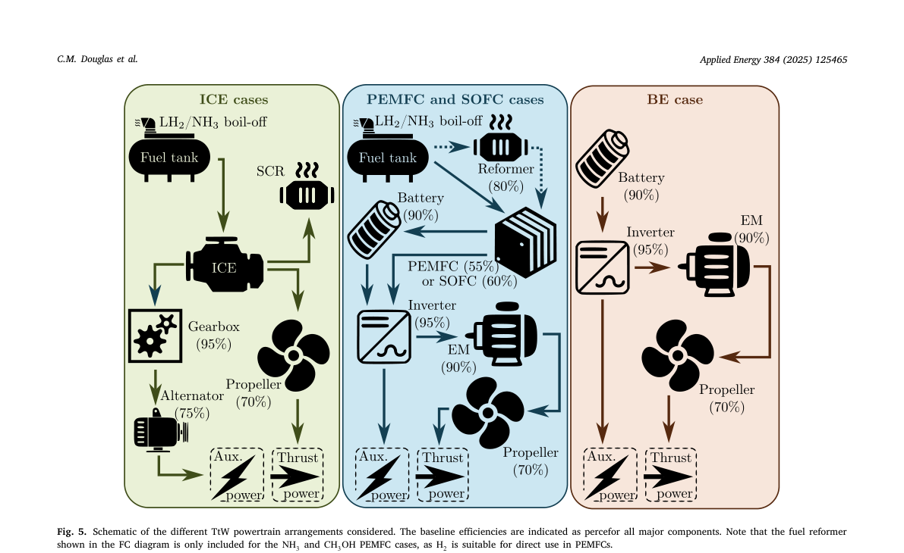
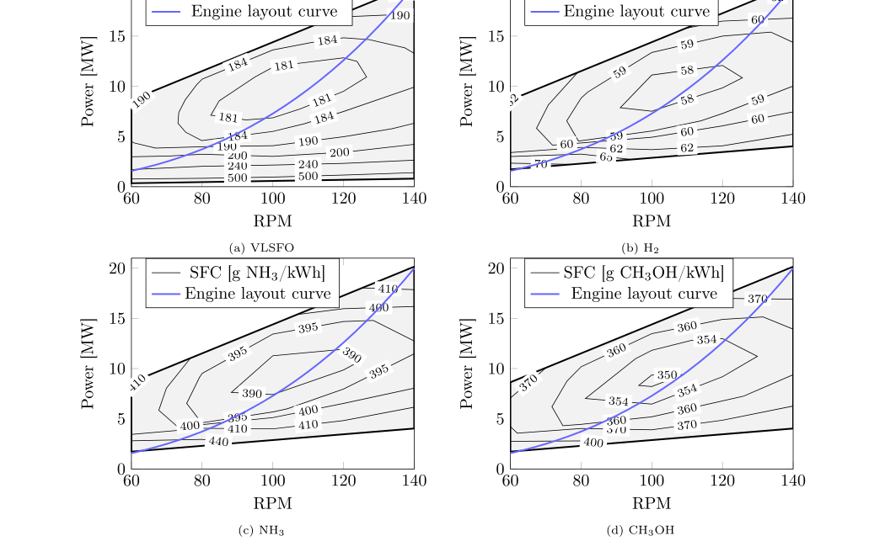
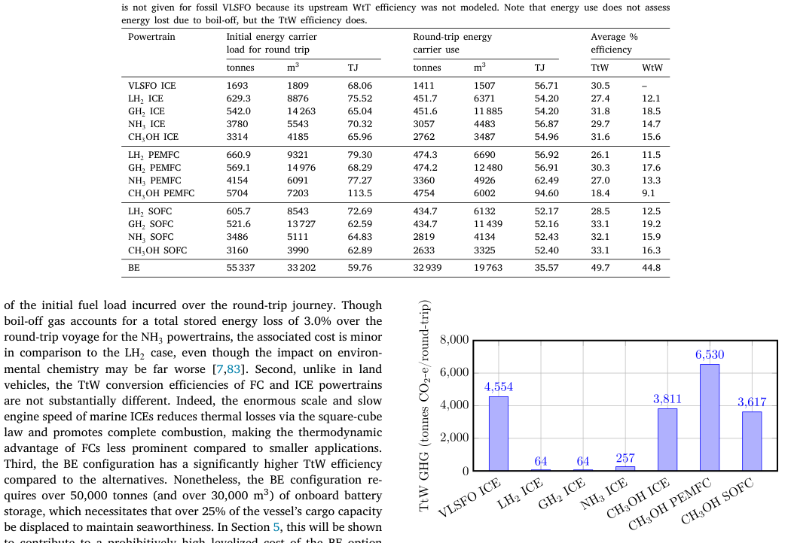
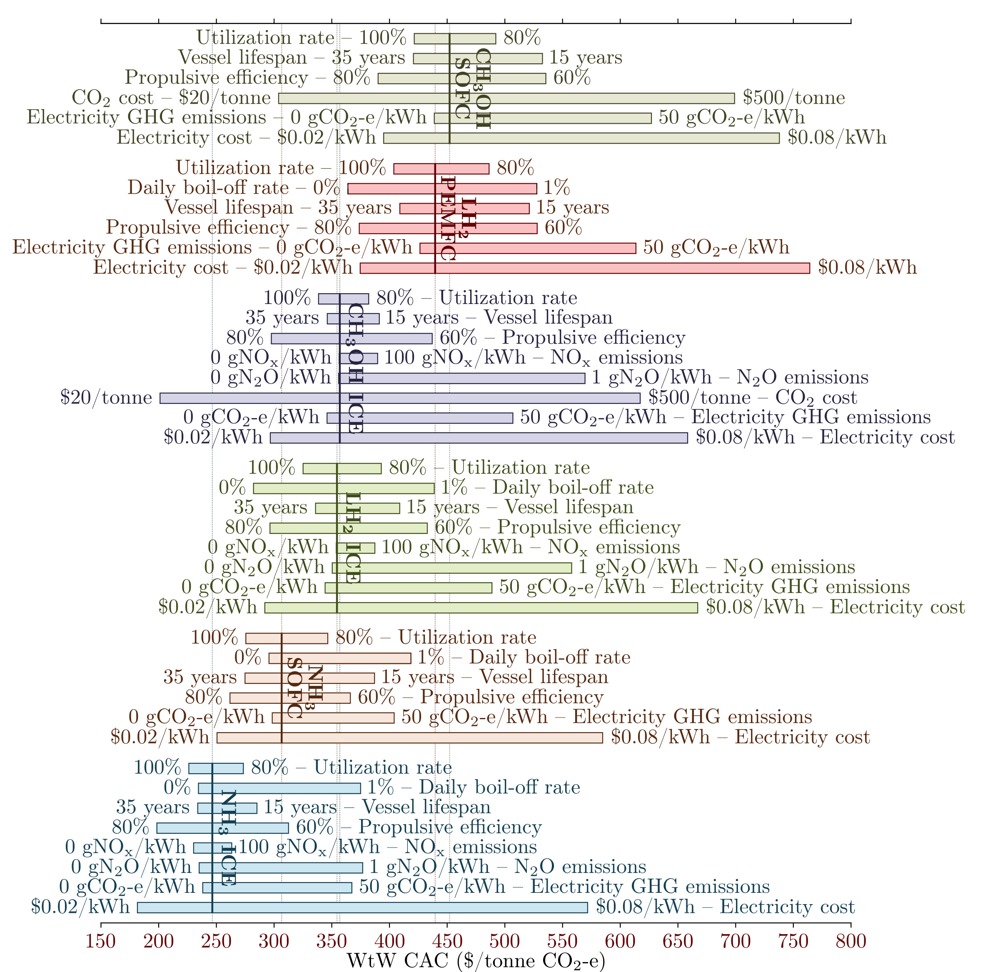

西澳—东亚绿色航运走廊的成本与减排 | Applied Energy
Douglas, C. M., Shanbhogue, S., Ghoniem, A., & Zang, G. (2025). Well-to-wake cost and emissions assessments for the Western Australia–East Asia green shipping corridor. Applied Energy, 384, 125465. https://doi.org/10.1016/j.apenergy.2025.125465
这项研究由 MIT Energy Initiative、MIT 机械工程系和 Duke University 完成。第一作者兼通讯作者 Christopher M. Douglas 当时隶属 MIT Energy Initiative 与 Duke University；共同通讯作者 Guiyan Zang 隶属 MIT Energy Initiative。团队以西澳至东亚铁矿石航线为对象，比较不同燃料与动力系统的全生命周期成本和温室气体排放。
结论先行
- 在作者设定的基准情景中，绿氨内燃机是成本最低的低碳方案：单位货运总拥有成本为 21.52 美元/吨货物，较 VLSFO 内燃机高 46.3%，但全生命周期排放低 92.2%。
- 燃料本身不是唯一成本。燃料支出之后，船上储能系统的资本成本决定了氢气和电池路线在散货长航程上的竞争力。
- 绿氨的优势取决于 N₂O 与 NOx 控制。若 N₂O 排放升至作者敏感性情景的 1.0 g/kWh，减排幅度会由 92% 降至 60%。
研究与证据
论文采用比较技术经济分析与归因型生命周期评估，使用代表性散货船、货物和往返航次，比较传统 VLSFO 与风电制氢、绿氨和绿色甲醇等路径。低碳燃料部署规模设为每年 20 PJ，并按 IMO MEPC.391(81) 的 well-to-wake 口径核算。








图 1—2 定义了结论的适用范围。 作者以铁矿石散货船的实际航次和代表性船舶参数建立比较对象，因此结论适用于这一类长航程大宗散货运输，不能直接外推至集装箱船或短途加注网络。
图 3—4 说明燃料竞争力从船上之前就已分化。 氢气在生产阶段每单位能量成本较低，但压缩或液化及港口加注会抬高交付成本；甲醇对可再生 CO₂ 来源敏感。图中是 20 PJ/年的规模化供给假设，不是某一港口的现货报价。
图 5—7 将燃料选择还原为动力系统选择。 燃料电池效率较高，却受设备资本成本限制；氨和氢内燃机的船上温室气体并非为零，NOx 后处理与 N₂O 排放会改变全生命周期结果。因此燃料采购、储罐、发动机和尾气控制必须一并决策。
成本与政策
VLSFO 路线在无额外支持政策时仍是成本最低的基准。作者估算，绿氨内燃机的绿色溢价为 6.81 美元/吨货物；氨固体氧化物燃料电池、液氢内燃机与甲醇内燃机的溢价更高。以碳减排成本衡量，绿氨内燃机仍是所有低碳方案中最低，但为 247 美元/吨 CO₂e。这不是某一航运企业的报价，而是论文在既定能源价格、设备寿命和利用率假设下的模型结果。

工程约束
氨路线的结论不能只按燃料价格理解。其氮氧化物后处理会增加运行成本与生命周期排放；燃烧过程中的 N₂O 又可能显著改变减排结果。氢气路线则面临致密化、储存和加注成本。论文因此把低碳燃料视为燃料生产、港口加注、船上储运与动力系统的联合工程。

启示
对航运走廊而言，绿氨的近期竞争力来自西澳的可再生能源条件和液体燃料供应链，而不是“氨”这一名称本身。船东需要将发动机排放控制、储罐与后处理系统一并纳入改造决策；港口与政策制定者则需要把低碳电力、燃料认证和加注保障放在同一套部署计划中。
局限性
- 结果基于一类代表性散货船与固定航次，不能直接替代特定船型或合同的投资测算。
- 绿氨内燃机的 N₂O 排放缺少大型船用发动机的公开实测数据，是影响结论的重要不确定性。
- 燃料成本与碳减排成本对电价、CO₂ 来源和利用率敏感，跨地区外推需要重新设定输入参数。